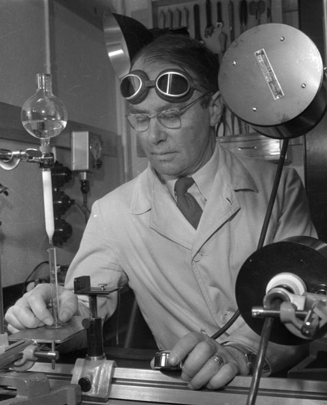

[In biochemistry] some of the most important problems are to isolate the substances which are responsible for a specific biological or biochemical effect, and also to define and characterize these substances as accurately as possible. —Arne Tiselius, 1948 Nobel Lecture 1 (Photo: digitaltmuseum.se)
Introduction •
In 1948, when Arne Tiselius was awarded Nobel Prize in Chemistry for his pioneering work on electrophoresis, he summarized his motivations for the work as follows:

Today, gel electrophoresis is used in biology labs worldwide to isolate, define, and characterize biomolecules. Gel electrophoresis is a powerful and versatile technique that is remarkably precise, yet gentle on the molecules being analyzed. Unfortunately, it has at least one big drawback: it can be difficult to master.
First, gels must be prepared according to detailed protocols. Small variations in the amount of an ingredient or the timing of a step can dramatically affect gel behavior. To illustrate this concept, we ran identical 1kb ladder samples on three agarose gels that were prepared with different buffers. We observed that the degree of band mobility, smearing, and distortion varied greatly for each gel.


Even when gels are prepared and run successfully, interpreting the data can be tricky because the relationships between "band" patterns and the molecules in a sample are very abstract and often ambiguous. These challenges can frustrate budding scientists, interfere with scientific reproducibility, and impede overall research progress.
We believe interactive simulation and visualization tools can help. We have created Gelbox, a dynamic “scientific sandbox” for visualizing the relationships between gel bands, sample molecules, and the gel itself. We sought to capture the notion that gels are easy to mess up, but they do so in predictable ways.
This project builds on concepts from Earth Primer, an interactive geology science book by Gingold2. We have also been greatly inspired by Bret Victor's Up and Down the Ladder of Abstraction3, Parable of the Polygons by Vi Hart and Nicky Case4, and many other works5–7.
The Gelbox Interface •


Commands & Shortcuts •
Discussion •
Other gel simulation History of gel "simulation" and classic limitations - single static view vs multiple linked representations - offers size only (most trivial aspect) - too perfect, no mistakes
Gels have a slow feedback loop — the time between making a mistake and observing its effects can be several hours.
If you wish to understand the simulation model, a good starting point is GelSim.cpp, which converts the parameters of a sample species and its environment to band geometry. Many of the simulation parameters are hot-loaded from sim.json. To convert DNA length (bp) to y-axis band mobility in the gel, we found it useful to reference expressions from Van Winkle, Beheshti, and Rill8. and the dissertation of A. Beheshti9.
We hope this tool offers a novel approach to learning gel electrophoresis that complements the ad hoc trial-and-error methods routinely used in laboratory settings.
Acknowledgements •
References •
- A. Tiselius, Electrophoresis and Adsorption Analysis as Aids in Investigations of Large Molecular Weight Substances and Their Breakdown Products, 1948 Nobel Lecture
- C. Gingold, Earth Primer, 2015.
- B. Victor, Up and Down the Ladder of Abstraction, 2011.
- V. Hart and N. Case, Parable of the Polygons, 2014
- Explorable Explanations, curated by N. Case et al., 2015.
- Desmos Calculator, 2011.
- The Concord Consortium, Molecular Workbench.
- D.H. Van Winkle, A. Beheshti, R.L. Rill, DNA electrophoresis in agarose gels: A simple relation describing the length dependence of mobility, 2002 Electrophoresis 23, 15–19
- A. Beheshti, DNA electrophoresis in agarose gels: A new mobility vs. DNA length dependence, 2002 Dissertation, The Florida State University